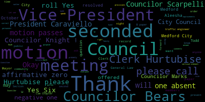
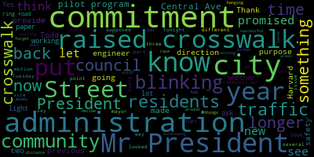
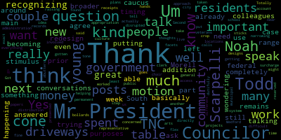
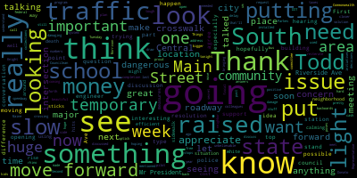

AI-generated transcript of City Council 10-20-20
English | español | português | 中国人 | kreyol ayisyen | tiếng việt | ខ្មែរ | русский | عربي | 한국인
Back to all transcripts
[Falco]: The 30th regular meeting in the Medford City Council will now come to order. Clerk Hurtubise, please call the roll.
[Hurtubise]: Councilor Bears? Present. Vice President Caraviello? Present. Councilor Knight? Present. Councilor Marks? Present. Councilor Morell?
[Falco]: She is not present.
[Hurtubise]: Okay. Councilor Scarpelli?
[Falco]: Present.
[Hurtubise]: President Falco.
[Falco]: President, six members present, one absence. Clerk Hurtubise, Council Morell did call me earlier today and she is unable to attend the meeting tonight. At this point in time, I'd ask everyone to please rise to salute the flag. I pledge allegiance to the flag. Pursuant to Governor Baker's March 12, 2020 order suspending certain provisions of the Open Meeting Law, General Law, Chapter 38, Section 18, and the Governor's March 15, 2020 order imposing strict limitation on the number of people that may gather in one place, this meeting in the Medford City Council will be conducted via remote participation to the greatest extent possible. specific information and general guidelines for remote participation by members of the public and or parties with the right and or requirement to attend this meeting can be found on the City of Medford website at www.medfordma.org. For this meeting members of the public who wish to listen or watch the meeting may do so by accessing the meeting link contained herein. No in-person attendance of members of the public will be permitted, but every effort will be made to ensure that the public can adequately access the proceedings of real time via technological means. In the event that we aren't able to do so despite best efforts, we will post on the city of Medford or Medford community media website in audio or video recording transcript or other comprehensive record of proceedings as soon as possible after the meeting. participate remotely outside of Zoom, please email the city clerk, ahertubise, that will be A-H-U-R-T-U-B-I-S-E, at medford-ma.gov. Let's see, motions, orders, and resolutions. 20-602 offered by Councilor Marks be it resolved that the Medford City Council hold a caucus on Tuesday, October 27th at 6.30 p.m. for the purpose of electing a president and vice president for calendar year 21. Councilor Marks.
[Marks]: Thank you, Mr. President. I put this motion on this resolution tonight. It's that time of the year. We're required every year to elect a president and vice president of the Meffitt City Council. So tonight I offer that we meet Tuesday, October 27th, which is next Tuesday at 6.30 for the purpose of electing a president and vice president for calendar year 21. Second, Mr. President.
[Falco]: Thank you, Councilor Marks. Councilor Bears. Actually, I'm sorry. On motion of Councilor Marks, seconded by Vice President Capiello, Councilor Bears.
[Bears]: Thank you, Mr. President. I would just ask my colleagues if we could table this until next week, just in case Councilor Morell would want to speak as to the timing of the caucus. So motion to table.
[Falco]: A motion to table is undebatable. and it needs to be seconded. So on the motion of Council of Bears to table this matter, seconded by. Does this motion have a second? Okay, seeing and hearing none. This does not have a second, so it cannot be tabled. Would anybody else like to speak on this matter? Okay, if I may, before we go any further, if my colleagues would not mind me speaking on this, I'd like to thank Councilor Marks for bringing this forward, especially in the interest of clarity and transparency. I'd just like to mention that the role of the Council President has taken on more responsibilities than ever before, especially over the past year during this pandemic. And while I have very much enjoyed my two terms as council president and take a great deal of pride in fulfilling this role, I have decided not to pursue the presidency for another term. I look forward to returning to the floor as an active participant, which will enable me to pursue the issues that mean a lot to our community, And I look forward to working with the next Council President, whoever he or she may be. So I just wanted to make that statement so everyone knows. And if they decide that they want to pursue the presidency, they absolutely can and should. So on the motion of Council of Marks, seconded by Vice President Caraviello. Clerk Hurtubise, please call the roll.
[Hurtubise]: Council Bears.
[Bears]: No.
[Hurtubise]: Vice President Caraviello. Yes. Councilor Knight. Yes. Councilor Marks. Yes. Councilor Morell is absent. Councilor Scarpelli. Yes. President Falco.
[Falco]: Yes. That is five in the affirmative, one in the negative, and one absent. The motion passes. 20-603 offered by Councilor Knight, be it resolved that the DBW Commissioner provide the City Council with a cost estimate for resurfacing Boston Avenue between Route 16 and Route 60. Councilor Knight.
[Knight]: Mr. President, thank you very much. As we're all aware, I think that it's safe to say the streets in the city of Medford are in some pretty bad condition, probably the worst we've seen in a bit of time. And with that being said, we have to start somewhere, Mr. President, to determine how we're going to address the road surfaces in this community, the streets, the roads. And in looking at certain areas in the community, I feel as though there are thoroughfares that are labeled emergency thoroughfares. I think the meeting before this, they talked a lot about priority sidewalks and emergency roadways and connectivity. And I think it's very important, Mr. President, that we look at our emergency arteries as the main roadways here in the community. The stretch of Boston Avenue being one of those emergency arteries. And looking at what it's going to cost and what we need to do to begin to get a roadway resurfacing plan in place, Mr. President. So I bring this paper forward to start a discussion. about what it's going to take and what it's going to cost for us to start providing services in the form of local services, like sidewalks, streets, stumps, tree removal, and the like, Mr. President. So with that being said, I offer this resolution. I ask my council colleagues to support it.
[Falco]: Thank you, Councilor Knight. Would anybody else like to speak on this resolution? Okay, on the motion of Councilor Knight, seconded by- Seconded. Seconded by Councilor Scarpelli. Clerk Hurtubise, please call the roll.
[Hurtubise]: Councilor Bears? Yes. Vice President Caraviello? Yes. Councilor Knight? Yes. Councilor Marks? Yes. Councilor Morell is absent. Councilor Scarpelli? Yes.
[Falco]: Councilor Scarpelli said yes.
[Hurtubise]: Okay, President Fevella, go.
[Falco]: Yes, six in the affirmative, zero in the negative, and one absent. The motion passes. 20-604 offered by Councilor Scarpelli. Be it resolved that the city administration give the city council the detailed financial report dealing with the spending of COVID CARES Act funding. Councilor Scarpelli.
[Scarpelli]: Thank you, Mr. President. As we move forward and we're seeing the uptick with numbers and what we're hearing is that the state isn't really going to look going backwards at all. As we move forward and we look at the issues of opening school and opening of the city council for meetings that be interesting to know if there is money that's still needed to the school system and what type of money they've used moving forward. So, um, and to see if there's, if there's need that we need to address as a council to move some initiatives forward. So I put that out as a resolution and hopefully my colleagues agree.
[Falco]: Thank you. Godfrey Scott Pelly, council of beers.
[Bears]: Thank you, Mr. President. Thank you, councilor Scarpelli for putting this on. I completely agree. Um, I think we really need to know what this money has been spent on and how much is left. Um, and I think that's becoming even more important as the stimulus talks and the federal government are talking about being able to use this money for a broader range of purposes. I think it's important that we know how much is there and still remains. Um, in addition to what it's been spent on already. Thank you.
[Falco]: Thank you. Councilor Paris, any other comments from the council? Okay, on the motion of Councilor Scarpelli, seconded by Councilor Bears. Clerk Hurtubise, please call the roll.
[Hurtubise]: Councilor Bears? Yes. Vice President Caraviello? Yes. Councilor Knight?
[SPEAKER_00]: Yes.
[Hurtubise]: Councilor Marks? Councilor Morell is absent. Councilor Scarpelli? Yes. President Fevella? No.
[Falco]: Yes, six in the affirmative, zero in the negative, one absent, the motion passes. 20-605 offered by Councilor Scarpelli, be it resolved that the city traffic engineer share any plans dealing with the crosswalk in front of the new police station. Councilor Scarpelli.
[Scarpelli]: Thank you, Mr. President. As we get closer, we see the unbelievable completion of that beautiful building, our police station, and something we should be very proud of. But again, it poses a bigger issue once that building is open and the crosswalk where we've been talking about. between south and main issues now with the police station. It's going to be interesting to see what type of plan we have in place, or is there any part of discussion about putting in? I know that what was discussed in the past were the rhino lights, the temporary crossing lights that could be installed. I don't know if that's going to happen. I know it was mentioned, and I know that we did call for a meeting, hopefully, talking to Representative Donato. We're trying to get something for next week. for next Tuesday at 530 just to discuss the top, one of the top 200 most dangerous intersections in the Commonwealth, Maine and South. Now that we have some money coming from the state and the state DOT now agrees that this is one of the most dangerous intersections, and we need to move forward as soon as possible. And again, with that conversation, to reiterate what I talked about last week, putting in the raised crosswalks as soon as possible to see how that can slow that traffic down. So I'm hoping we get some answers, and we move forward in a positive light. So thank you.
[Falco]: Thank you, Councilor Scarpelli. Councilor Bears?
[Bears]: Thank you, Mr. President. I think councilor Scarpelli basically answered my question. Um, but is this would be part of the conversations around the main and South redesign or are you trying to get something in there prior to that happening?
[Scarpelli]: The hope is that the discussion tonight with this resolution, with the traffic engineer being part of that meeting next week, that'll be something we could draw out all at once. So I don't want to delay anything else as we're moving forward. So thank you. Thank you.
[Falco]: Thank you. Councilor Bears. Any other questions, comments from the council? Okay, seeing and hearing none. On the motion of Councilor Scarpelli, seconded by Councilor Bears. Clerk Hurtubise, please call the roll.
[Hurtubise]: Councilor Bears? Yes. Vice President Caraviello? Yes. Councilor Knight? Yes. Councilor Marks? Yes. Councilor Morell is absent. Councilor Scarpelli? Yes. Yes. President Falco?
[Falco]: Yes. Six in the affirmative, zero in the negative, one absent. The motion passes. 20606, October 8th, 2020, to Brianna Lugo, current mayor, from Kimberly M. Scanlon, city solicitor, regarding council paper 20-476. Dear Mayor Lungo-Koehn, on October 8th, 2020, the Medford City Council have made a request to include a 3% tax in the draft Cannabis Advisory Committee Ordinance. However, since General Law Chapter 64N, Section 3 is a local option statute, the preferred method is for the Council to accept the provisions of the statute pursuant to General Law Chapter 4, Section 4. For convenience purposes, I have included the following format below. Be it resolved that the City of Medford, through its City Council, accept the provisions of General Law, Chapter 64N, Section 3, and impose a local excise tax on the sale or transfer of marijuana products for adult use to anyone other than a marijuana establishment at a rate of 3%. Respectfully submitted, Kimberly M. Scanlon, City Solicitor.
[Knight]: Motion to adopt. the provisions of general law chapter 64 and section three and impose a local excise tax on the sale or transfer of marijuana products for adult use to anyone other than a marijuana establishment at a rate of 3%, Mr. President. Second.
[Falco]: On the motion of council night, seconded by Vice President Caraviello. Any questions from the council or comments? Anyone have the hand up? No. Okay, on the motion of council night, seconded by Vice President Caraviello. Clerk Hurtubise, please call the roll.
[Hurtubise]: Councilor Bears. Yes. Vice President Caraviello. Yes. Councilor Knight. Yes. Councilor Marks. Yes. Councilor Morell is absent. Councilor Scarpelli. Yes. President Falco.
[Falco]: Yes. Six in the affirmative, zero in the negative, one absent, the motion passes. Communications from the Mayor 20-607 to the Honorable President and members of the Medford City Council, City Hall, Medford, Massachusetts 02155, dear Mr. President and city councilors, I respectfully request and recommend that your honorable body approves the appropriation from the TNC surcharge municipal distribution receipts reserved account. 124-102-5840-0000-0000-113-0000-0000 in the amount of $136,129.20. In accordance with Massachusetts General Laws Chapter 187 of Acts of 2016 to cover transportation related projects and improvements. A detailed list of anticipated projects and improvements is attached here too as Appendix A. The prepared list does not include emergency improvements that may arise and utilize the fund balance of this account. Traffic engineer, Todd Blake, is present to answer any of the council's questions regarding this matter. Sincerely, Breanna Lungo-Koehn, Mayor. Councilor Bears.
[Bears]: Thank you, Mr. President. I was just wondering if a representative of the administration could tell us how much is in the TNC, the TNC surcharge municipal distribution receipts reserved account.
[Falco]: I believe we have Aleesha Nunley-Benjamin with us, so she could probably talk to that. I'm going to unmute you, Aleesha. Aleesha, did you have a question for Councilor Bears?
[Nunley-Benjamin]: Sure. Good evening, Honorable City Councilors. Let me look. Right now in the TMC fund, we had a balance of $161,519.75.
[Bears]: And how?
[Nunley-Benjamin]: We spent $103,532.80 in fiscal 20. And then in June, our next T&C, which you are programming tonight, came in at $136,129.20.
[Bears]: Got it. Thank you.
[Falco]: Councilor Knight, did you have a question?
[Knight]: I did, Mr. President. I do believe that this council during budget time requested that we'd have a quarterly meeting relative to where we were with forecasts and receipts. And then the council did vote on a resolution asking that this meeting take place relative to the state of the city's finances for the second Tuesday in October. That never happened. And here we are this evening with a request for appropriation before us, Mr. President. So, you know, I know that these funds are through the surcharges around those Uber and Lyft rides that originate in the community. And looking at the appendix that's attached, I certainly see no issue with the appropriations. I'd like to see them maybe distributed a little bit more equitably across the community. However, I feel as though it's important, Mr. President, that we sit down and schedule a time for us to talk about the state of our finances here in this community. During the budget, we were talking about a fiscal crisis. We took $5.5 million from our reserves and we appropriated that much money from our reserves to balance the budget. The question is, are we doing better now? Do we have the ability to restore some of those funds back to our reserves if our forecasts are showing that our receipts are up well above anticipated returns? So Mr. President, it was very important. discussion that took place during the budget, and this was one of the items that came out of that, was that we'd meet quarterly to determine what the current and ongoing state of fiscal affairs is in this community. And that needs to happen, Mr. President. And we have a paper before us asking us to appropriate $136,000, but we still haven't had that meeting to recap the last quarter. So that's concerning to me, Mr. President, and I'm hoping that the finance director would be able to coordinate with you. to determine a time where we'll be able to do that before the next quarter is over. So with that being said, here we are almost one month into the next quarter, Mr. President. So we're going to get a skewed perspective of what's going on if we don't meet as close to the close of the quarter as possible. So I'd ask that that meeting be scheduled.
[Falco]: If I'm correct, you wanted that during the regular session, right?
[Knight]: I did want it during the regular session, yes, Mr. President. If this was a free cash appropriation, I'd be much more concerned about taking a vote this evening on it, but where it's coming from a dedicated accountant that has a dedicated purpose, that's another thing. So that being said, Mr. President, this will be the last money paper I vote on until we have that quarterly meeting. So with that being said, Mr. President, I rest my case.
[Falco]: Thank you, Constant. We'll get that scheduled. I'll reach out to Aleesha tomorrow, and we'll get that scheduled. Mr. President, do we have?
[Marks]: Do we have the city engineer on?
[Falco]: I do not see, you want the traffic engineer, right? Traffic engineer, city engineer, anyone at all.
[Nunley-Benjamin]: Todd Blake is on. Is he here? Okay, let me see.
[Scarpelli]: have the traffic engineer on.
[Falco]: Can you just give us a brief
[Blake]: We're proposing a radar feedback sign in North Medford on Fells Ave as the steep part going downhill. We're proposing a pedestrian warning flashing sign on Fulton Street near Watson Street in the Heights. We're proposing in the Wellington area on Bradbury Ave at 2nd Street, flashing stop sign. in the hillside area in the north at Capon, a flashing stop sign. Then I'll jump to the bottom of the list. In East Metro Glenwood area, we're proposing a Salem at Hadley to be a flex post design, painted bump outs to try to address some safety concerns there. And then there, Five others that are taken from the 2016 Complete Streets Top 20 Prioritized List that are still not complete. So we're trying to address some of those to get them off that list. One is in South Medford at Main Street. On Main Street at Frederick Ave, most of it includes new wheelchair ramps. West Medford Place that road at Irving Street. Same thing, new wheelchair ramps, South Medford, Main Street at Stearns Ave, crossing Main, wheelchair ramps. West Medford, Sharon Street at Fairfield Street, same thing, wheelchair ramps. And then also in the Lawrence Estates, North slash Central Medford on Ford Street at Webster and Cedar. There has been some work done there in the past related to a paving job, complete the rest of what's outlined in the 2016 top 20?
[Marks]: So, Mr. President, if I could, just because this has been a longstanding issue with this council, it predates Todd. But Todd, many years back, this council voted to implement a pilot program for raised crosswalks. And at the time, three of them were recognized by the city under a previous administration. One out of the three was initiated on Winthrop Street, Central Ave, and Harvard Street have yet to get their raised crosswalk. Is that something that's being looked at or can we assume now that it's been several years that that is not being reviewed and no longer is part of the commitment that was made by a previous administration?
[Blake]: As you said, that predates me, but I could say that obviously the Winter Street one is there and the two others, you know, they're on a long list of which includes this complete streets list. And in the past we've selected from previous council papers, as well as safety concerns received by various city staff, various city departments. So I couldn't say what the status is of those two that you're speaking of, but I will say in the two years past and this year as well, we're trying to, with this particular money, we're trying to spread it out as much as we can. and get, you know, choose somewhat strategically in the sense of how much per, so we could get more locations. Something like just an order of magnitude for a raised crosswalk in the similar fashion as Winthrop Street costs at that time about $50,000. I'm told, I wasn't here. So something like that, you'd be able to get maybe two of those with this money. So just to give you an idea, in years past, we've gotten about 25 locations. Does that help? It doesn't necessarily address exactly what you're saying, but there are many lists that we try to go off of. And there are some of these crosswalks coming as part of the Eversource MOU agreement.
[Marks]: Right, and I realize when city administrations change, there may be a different direction in communities. However, when residents are promised certain items to happen, especially with traffic coming in their neighborhoods, they don't look at it and say, now we have a new mayor, there's a new direction, and we're not going to get the raised crosswalk we were promised under the last mayor. because now there's a different direction. I don't think residents see it that way. They would hope that commitments are kept from administration to administration. And when you have a pilot program, at some point, a pilot program is supposed to have an end date. So you're supposed to review how successful the pilot was and either decide to move on with other race crosswalks or decide that they're not useful and don't provide the safety that we need in the community. But either way, at some point, I think we have to put this issue to rest. And now you're the traffic engineer, and if indeed these other two areas, Central Ave, I get calls all the time about speeding cars. I think all my colleagues can attest to that. This was an ideal place for a raised crosswalk. I can appreciate the expense. I remember on Ring Road when they put that blinking crosswalk that looked like airplane traffic lights. on ring road, that cost about $46,000 to put that on ring road. And I would say within the first six months, it stopped working and it hasn't worked since. So talk about putting good money after bad money into something that is no longer even in effect. At least the winter street race crosswalk is still serving a purpose. I would respectfully ask as part of this paper, and I have no problem supporting this paper, that the city administration respond back, Mr. President, on where do we stand with the raised crosswalks on Central Ave and Harvard Street, the commitment that was made several years back. And if it's no longer a commitment, I'm a big boy, just let me know. And I'll fight for something else, or I'll fight to see if we can get those once again to become a commitment. But just to leave them hanging, leave residents hanging that were promised. These were promised, these were articles in the paper, discussion among the council. These were things that were open and notorious, and then just to forget about them like nothing's going on, doesn't, in disservice to this community and the residents. And that's what gives government a bad name, Mr. President, when things get forgotten about. And I'm not going to forget about these, Mr. President. So if it's no longer a commitment of this administration, just let us know. So Todd, if you can take that back to the city administration, and if it's not a commitment, then just let us know. But if it is a commitment, then these two are a priority. Residents have been waiting four to five years on these, and we have to come out whether or not the pilot program is successful or not. And my idea, This is not something novel. This is being done in many other communities. A raised crosswalk puts you at a higher height, at a level with oncoming traffic. They're very, From a distance you can see them, they're very visually pleasing from a distance. And they do provide safety in areas that we know are highly traveled and high rates of speed on those streets. And if it provides safety for the community, whether it's $5 or $50,000, we just talked about shoveling sidewalks and creating a new ordinance. It's worth every penny, in my opinion. I know we want to make it look like we're everywhere in the community and putting these blinking signs up, which I may add, Mr. President, go by any blinking light. And let me tell you, half the side's not blinking. Some of it's blinking. Some of it's not. But these are pretty new. And I don't know if the city goes around. A lot of them are malfunctioning. Or they're not working. Or they're cheaper ones. I don't know. But they're not working. They're not serving their intended purpose. So I would ask that the And this is no reflection, again, on the city and traffic engineer. I think he's doing a tremendous job. But there has to be more follow-up in this community, Mr. President. So I would ask, in the form of a motion, that we get an update on the two crosswalks, Central Ave and Harvard Street, whether there's still a commitment in the time frame, and that the other blinking lights that are throughout the community that were recently put in, that the city go around and audit them to see why a lot of them are malfunctioning.
[Falco]: Thank you, Councilor Marks. Clerk Hurtubise, do you have the language to that motion that was offered by Councilor Marks?
[Hurtubise]: I have everything except the audit on the blinking lights. Hang on just a second. I'll read it back.
[Falco]: Councilor Marks, do you want to make that a beat paper? We'll make that a beat paper. Okay.
[Hurtubise]: What I have is a request that the administration respond back on where we stand on raised crosswalks on Central Avenue and Harvard Street, and a request that the city audit the blinking lights that were recently installed.
[Marks]: If we could just add language on the commitment for raised crosswalks. I know I said a lot of stuff, but that's important because that was a commitment made by a previous administration, and that should be honored.
[Hurtubise]: Okay.
[Marks]: Thank you.
[Hurtubise]: I'm going to respond back on where we stand on the commitment for raised crosswalks on Central Avenue and Harvard Street, and that the city audit the blinking lights that were recently installed.
[Marks]: Thank you, Mr. Clerk.
[Hurtubise]: Thank you.
[Falco]: Thank you, Mr. Clerk. On that- That is a B paper. That is a B paper. On that B paper offered by Councilor Marks, seconded by Vice President Caraviello. Vice President Caraviello.
[Caraviello]: Thank you, Mr. President. Again, I want to thank Councilor Marks for bringing those two crosswalks up. I mean, I was by that council that had been waiting for that. And our current mayor was by the council who was very supportive of those. So Councilor Marks is right. I mean, where are we with those? You just can't forget about it, make a promise and forget about it, no matter who's in charge. So I'd like to see those two. comes to fruition there. They're both heavily traveled streets. And again, he's right. We're always getting calls. I mean, getting emails from the Harvest Street people about the traffic going up and down there. So I'd like to thank you for bringing that up. But I have a question for Aleesha and Benjamin.
[Falco]: Yes, Aleesha. He's still there to the chair? She is here with us. Vice President Caraviello, please continue.
[Caraviello]: Aleesha, the money that we're appropriating, is that money from the first payment of the TNC, or is that new money?
[Nunley-Benjamin]: That's new money. We get new money every June from the TNC that has to be programmed, and then I give a report.
[Caraviello]: Are we up or down from last year on that number?
[Nunley-Benjamin]: I'd have to compare that to that.
[Caraviello]: I think it was a little higher last year. It might have been a little higher. Yeah, I think with the COVID, the ride shares might have suffered a little bit too. Okay, I was just checking, I wasn't sure if we were still using last year's money. Did we expend all the money from the last payment? Almost all of it. Almost all of it. All right, thank you.
[Falco]: Thank you, Vice President Caraviello. Councilman Scarpelli.
[Scarpelli]: Thank you, Mr. President. First, let me thank Councilman Knight for bringing up a very major point, a very important point. I think that what we're hearing from the state and what's being talked about, the fiscal damage that we're going to see in a year is going to be pretty damaging. So I think it's important that the request that he put forth a while ago that we do meet and really understand where we are, especially with the the free cash and where we stand with that, and where we stand with our taxes and our collections and stuff. So I think it's important that we have an idea of where we are as we move forward, because let's not make this a secret. Things are going to get really, really, really tough soon. And we're going to have to make some hard decisions if we're not going to get the support that we need, both in the state and the federal side. So I think that's very important. Second, I know that. We're looking at the raised crosswalks. That's a great question, and it's something that was a great solution for the Central Ave location with Morrison-Parkes. Because before that pilot program, it was just a speedway. And then it made a huge difference, being on the school committee back then, that that was one of the huge concern with the kids in the neighborhood, and the bus stops, and so on. That is a huge concern. But you see in neighbor communities, I know Todd might be familiar with it, I know that on Powder House Boulevard, there was an awful accident and a pedestrian death there. And what they did there is they didn't put a raised sidewalk, but they put a raised roadway with arrows depicting the rise. And it really slows that traffic down in front of that school. And I can't see that being a major cost where it's actually, it was put into place very, very quickly. There were no decorative blocks, but there is a clear rise that slows down that area. I think that if we can look into that, Todd, I'd love to get an idea if we can even possibly do that in some of the locations, including South Street, Main Street, as we're waiting for get through and see what they can do, but I'm just afraid we're going to get to a situation where there's going to be a death in one of these areas. And we're going to be telling each other, we told you so. And I don't want that. So if there's a way that we can look into that and look at some of this money because I need some clarity on what we're seeing around the neighborhoods. And I know it might be like the 3,000, the 4,000, 5,000 hits with this. But if you do it 15 times in the community, it's $50,000. And it's something that looks temporary all over the city. We have light white paint around intersection streets with these white They're not cones, they're just sticks. And within the first week that I saw them, especially in South Medford, they were knocked over immediately. Can you explain, is that temporary? Is that, how are we going to deal with that when it comes to, the question I had with the raised sidewalk at South and Main during the winter was, well, with plowing, we can't do that. Well, with all these sticks all over the place, how are we going to manage that area in that situation?
[Falco]: Todd, would you like to answer Councilor Scarpelli's question, please?
[Blake]: It was a great point, Councilor. So the idea of a lot of those things that you see at Boston at High and Fulton at Winslow and Medford at Albion and Maine at Albion and Columbus School, those are cost-effective traffic calming measures using paint. And right now, They're movable tall cones, but the idea is flex posts that would be stuck to the ground, which is right now the most local example for folks is Medford Square on the double yellow line in the area of Carrolls and Clippership Drive. So that's what would be there.
[Scarpelli]: That's good.
[Blake]: Or permanently, just that we're so close to winter that it didn't make sense to stick a lot of those down and then take them up for the winter snow. So this is all temporary. The idea is the tall cones are temporary until we establish where we're going to place the cones that would be up for nine months to the year. So if we go that route, and these are, I realized these are all kind of new things for the city of Medford to experiment with. And I appreciate the openness and allowing us to experiment with these things to try to improve safety by slowing speeds down, making crossing shorter, making drivers more aware of pedestrians. And with all these things, there's some preferences. Some people like certain things, some people don't. And there's costs involved as well. And we're trying our best to address concerns that are raised to us in a cost-efficient manner. So we realize that sometimes everyone wants the raised crosswalk everywhere. And I'm not opposed to those myself. It's just there's a lot of requests, as you know. And we're trying our best, and we're definitely open to trying new things. That's why the Grove Street speed table was an example of a more cost efficient speed hump than a raised crosswalk like Winthrop Street. So just for order of magnitude, the Grove Street speed table is about one-fifth the cost of the Winthrop Street raised crosswalk. So those are things that I've told that I've been told that that's been pretty well received. It's a more gradual bump. The idea is to get people to go 25, not 40. It doesn't get people to go 10 or 5. That's not the idea. So those are available in our toolbox as well.
[Scarpelli]: So with that, I appreciate that. So I really think something like that, where that's more cost efficient, but more importantly, It's long lasting. If you're looking at something that's $10,000, putting in that what they've done on Grove Street and add that to what you can do at. at Central Ave, using that example, that would drastically slow down that dangerous roadway by putting those cheaper, more efficient hurdles to slow that traffic down. But at the same time, not looking at, because I'll tell you the truth, Todd, I appreciate everything you guys are doing, and I appreciate trying these. But when you're looking at putting in ten different areas with this temporary $4,000 hits here and there, to me, I just think that it's not worth doing it right now until we're doing the full-time piece and using that money to something like the raised roadway in Central and other locations. I know it's my preference, but that's my concern. And I look at equity. We've been talking about Riverside Ave, Todd, for a while. And I don't see anything here with Riverside Ave. We have a major complex with two of the biggest schools in our community. And that's been some issues. We've had some issues there with both lack of cross lights, with traffic calming measures. And did we entertain anything on Riverside Ave?
[Blake]: Yeah, if either the president or Adam could allow me to share my screen. I could show you a map of the last two years ride share.
[Falco]: Adam, can you please help him out with that?
[Blake]: I'm on it. While I'm waiting on that, yeah, Council, these are all great points. And as I said, we're trying our best to spread the wealth around the city. And there are So some things about raised crosswalks and speed tables and raised intersections, besides the cost, there are certain strategic locations that I would recommend for some versus others. So like some of them are more suited for mid blocks, some of them are more suited for intersections and things like that. I'm familiar with the powerhouse at Curtis, one that you spoke of in that area. And some of these painted bump outs with With cones, I mean, those are in lieu of, in some cases, the larger intersections, you get some improvements for thousands versus hundreds of thousands. So like, for instance, Tufts Square, that costs a half million dollars to build that large bump out. And it's effective for main street traffic, but we don't, I don't believe we have a half million dollars to put everywhere. So what we're trying to do is, get some of the improvements with these other treatments, if that makes sense.
[Scarpelli]: So this- And I just want you to know, Todd, you came into a very difficult position. So, and I'm not, this is just conversation that I've talked to constituents about, and just to share comments. I think that you're doing a great job, and we are seeing a drastic difference. And I think people in our community see that. We've committed to traffic calming measures. And other than South and Main, I'm going to be honest with you, throughout the rest of the city, I think we've seen a huge support by your office in this community to say, let's try to find ways to make it happen. So I really appreciate that. So I don't want to, I'm not, if it sounds negative, I don't, I'm just looking at other avenues.
[Blake]: So thank you. Not at all. So on the screen is a map of the last two years improvements. So it kind of gives you a great visual to show how spread out throughout the city it is. The red ones are from the first year, the blue ones are the next year, and the fiscal year 21 are not on this map. But I just wanted to point out that the Riverside comment, there was one from fiscal year 19, a flashing sign. I know it was just a flashing sign, but it was something. In Riverside, there'll be another opportunity coming up soon where there's several utility companies that want to get into Riverside Ave, and usually after, Utility companies in or after You know, the city itself is in for repaving and whatnot. Those are opportunities to do things. That's when the Grove Street speed table came about, because it was already being repaved. Hopefully you guys noticed, everyone noticed in the city, all the improvements on Locust Street. It took two and a half years to get built, but those were part of mitigation commitments from that development. So Locust Street is almost completely redesigned with a lot of good stuff on there. And that's off of Riverside Ave. Yeah, so hopefully each neighbor understands that we're concerned and we're getting to them eventually. And you know, we'd like to hear from people what they like and what they want too, so.
[Scarpelli]: Thank you.
[Bears]: Thanks, Todd.
[Falco]: Thank you, Councilor Scarpelli. Councilor Bears.
[Bears]: Thank you, Mr. President. And thank you, Todd. I have a couple of questions for you through the chair. It kind of goes off what Councilor Scarpelli just said, these bollards and sticks and posts. Are there any plans in some of these locations, at least thoughts about designs for a more permanent narrowing? Or is the idea just to kind of have these cones and then go to flex posts as a next step?
[Blake]: So it's a great question. So with the paint, sometimes you get some of the benefits without all the costs and headaches of the full design, meaning construction, cement, curb, drainage, all that stuff. So sometimes the paint gives an appearance enough by itself without cones, then the cones add a vertical element to get really the driver's attention. And then there's a brand new thing that we have out on the street at Medford at Albion, where it's a tan colored paint that's meant to look like a sidewalk bump out, but it's not a bump out. And the other thing with the paint is you can get more aggressive with it. With curb, you can't go out as far with it because you truly have to accommodate trucks and buses and emergency vehicles, whereas paint, You know, you're trying to get most of the motorists to follow that, but it still allows for it to be driven over. So, you know, we'd love to do all of it with full design, but there are 730 plus streets and 1600 plus intersections. So, you know, we're constantly trying to find different sources of, you know, funds for all these things that we want to do for the community. And, you know, we've been pretty successful lately with a lot of grants that we've received. And we hope to do that in the future. But I guess the answer is, we'd like to do permanent improvements everywhere if and when possible. But these are strategies used in other communities as well. And again, some people, there's different preferences. But they are used in Boston, Cambridge, Somerville, Seattle, all over the US. Let us know which ones you like and where you want them, and we'll try to do it.
[Bears]: Thanks, Todd. And just another question. It's not actually directly on this TNC appropriation, but I've gotten calls from a couple of residents concerned about access to their driveways. They kind of live near some of these new cone projects, and they're having a difficult time getting in and out of their driveways. Did you talk to abutters who might be disrupted by the new cones that have been put up about that?
[Blake]: Yeah, I've had conversations with internal staff and abutters and everything to work through these things, because they're new to Medford. So one at Boston and High contacted me and said, hey, I'm having difficulty going in on my driveway. There's a cone there. And they were wondering. They didn't want to just move it on their own without permission. And I said, no, that's fine. We'll move it. We're here to help any unintentional negative consequences is truly unintentional. So we can move it. We can move it. They can move it. You know, as long as it's not in the travel lane, it's just meant to add a vertical element to get people to comply with the white lines, because if the vertical element's not there, they just drive right over it as they've always done. So we heard, you know, Boston at High, that was the one I was speaking of last year on social media, it blew up that it was a big safety issue. And we're trying to slow people down, make them take tighter turns. Another one was at main at Albion really opposite Hicks and a resident owner there, I spoke to, and, you know, I asked her if the cones are new, she said, no, she thinks it's great. And she mentioned about the street sweepers that she goes above and beyond and moves it and moves it back. And I said, that's great. Thank you for doing that. You know, it's, it takes, as people said in the committee meeting, it takes all of us to work together. And yeah, that's one thing I do want to say about all this stuff, anything you see on the street, it's truly with the intent to help improve. It's not meant to be, you know, negatively impact anyone's lives in any way. Although with that being said, sometimes there are known trade-offs, not for that particular project, but you know, in other cases, when you do, you know, there's certain things in the right away that have to be trade it, like parking versus bump up versus bike lane versus, you know. So sometimes there are known impacts like that, but that's not the intent.
[Bears]: I think that's the exact tone to approach this with, Todd. So thank you.
[Falco]: Thank you, Councilor Bears, Vice President Caraviello.
[Caraviello]: Thank you, Mr. President. Todd, just a quick thing. You painted some bump outs on Golden Avenue at the beginning. And those cones are just crushed that you put up there. have those replaced, I mean, I think there was like four or five, I think like six of them, and I think there's only one left standing, they're all kind of just bent over on the ground, so if you could at least replace those?
[Blake]: Yeah, that one, there were four, they will definitely look into that.
[Caraviello]: Yeah, they're just crushed.
[Blake]: That was a case where there are signs saying no trucks, but compliance-wise, I guess, you know, people weren't necessarily satisfied with the compliance, so.
[Caraviello]: Well, the trucks just ran them over.
[Blake]: Yeah, it was another attempt to paint bump outs to give the visual impression of a more narrow side street and also the vertical cones. And that will happen. And that's why we went with the movable ones at first so that we could play around the position of them. And maybe if we choose ones that stick, we'll position a little further back. These are the things that we're trying to do to help folks.
[Caraviello]: Well, I say, if you could replace them, it would be, the residents over there would appreciate that.
[Blake]: Okay.
[Caraviello]: Thank you.
[Falco]: Thank you, Vice President Caraviello. Todd, if I may ask really quick, and I may, maybe I missed this, but you had, when Councilor Scarpelli was asking about the, the various, we'll call them cones or the sticks that we'll put up. And you made it sound like, I think you said if we head in that direction, making it sound like those will be permanent. Am I correct?
[Blake]: Well, these are options available to the city again, cheaper than curbing because curbing a curbs bump out at one corner of an intersection might run you 10 to $20,000. And these are, you know, hundreds or, or, you know, a thousand dollars. So it's like, cost effective measures to try to get the same impact without impacting drainage and things like that. So the cones, you could either just paint the bump outs. White, you could paint them with tan color as we just did in Medford at Albion on one corner just to show an example. You could do that with or without cones or flex posts. The flex posts and the cones, what they do is they add a vertical element. So originally when we painted the heights in Boston at high with just paint, We didn't really hear about it because people could just still drive over it. So, you know, with the vertical element, it adds that other flavor and they kind of have to comply. I mean, they could still, it's plastic, so they can still run over it, but at the risk of their vehicle. So it's, you know, these are things that are meant to help with compliance.
[Falco]: So if I may, I completely understand the vertical element, but will the temporary vertical elements, which are the cones now be replaced by the more permanent vertical elements, which are drilled into the ground?
[Blake]: The intent is to do that. And then because we're so close to the winter right now, so instead of two months and then they have to be removed, the intent is in the spring would go back and put in either screwed in or stuck to the ground with adhesive versions. And those versions are more narrow and a little smaller, but the same color and the same idea.
[Falco]: Okay, so I understand that. So is the cost for those that are more permanent in nature, are those part of this here, or will there be funding that you'll be looking for in the spring for that?
[Blake]: No, those were inclusive of the previous year. So Boston High was in one of the last year's list in Fulton. So I'll say they're permanent in the sense that they last about nine months and they'll have to be redone every year and last about nine months each year because it's ongoing. So.
[Falco]: Okay. So I thank you so much for all your hard work. I believe Aleesha wants to speak. Aleesha, I'm trying to unmute you.
[Nunley-Benjamin]: There you go. Thank you, Council President. Yeah, I just wanted to follow up on Councilor Scarpelli's request for funding. Last year, it was 122, 122.90. So it's actually increased by 14,000. Okay.
[Blake]: I think the, am I still on?
[Falco]: Yes, you're still on, Todd.
[Blake]: I think the explanation for that with the pandemic is that the fee went up, but the rides probably went down to a balance of, What did the fee go up to?
[Falco]: I thought it was $0.10. Do we know what the fee went up to? Todd, will you know the answer to that?
[Blake]: I'd confirm with Aleesha, but I believe it went up to $0.20.
[Caraviello]: Oh, it's $0.20. Oh, wow, that's a big drop from last year then.
[Blake]: I'd confirm with Aleesha.
[Caraviello]: I think last year we got like $190,000 the year before, if I'm not mistaken, $192,000. So yeah, that was a big drop. I mean, and it was all relative to, you know, the COVID thing. You know, people just stopped, you know, started saying, you know, we're using, so we should be happy that we even got that much money. Thank God that they doubled the rate.
[Nunley-Benjamin]: Thank you. I didn't receive anything that said it doubled the rate, but I'll get back to you and look into that. Okay.
[Falco]: Thank you. Councilor Knight.
[Knight]: Move approval, Mr. President.
[Falco]: Okay, on the motion, okay, so there was a B paper, which was offered by Councilor Marks, and I believe that was seconded by Vice President Caraviello. On that motion, Clerk Hurtubise, please call the roll.
[Hurtubise]: Okay, on the B paper. Councilor Bears.
[Bears]: Yes.
[Hurtubise]: Vice President Caraviello. Yes. Councilor Knight. Yes. Councilor Marks. Yes. Councilor Morell is absent. Councilor Scopelli. Yes. President Falco.
[Falco]: Yes, six in the affirmative, zero in the negative, one absent, the motion passes. Todd, if I could ask you to please unshare your screen, I'd greatly appreciate it. On the main- I just want to see yourself on TV. Anyone joining us are probably wondering what it is. Let's see here. On the main paper, on the motion of Councilor Scott Fevella, seconded by- Second. Councilor Knight, Clerk Hurtubise, please call the roll.
[Hurtubise]: Councilor Bears? Yes. Vice President Caraviello? Yes. Councilor Knight? Yes. Councilor Marks?
[Marks]: Yes.
[Hurtubise]: Councilor Morell is absent. Councilor Scarpelli? Yes. President Falco?
[Falco]: Yes. Six in the affirmative, zero in the negative, one absent, the motion passes.
[Bears]: Motion to take papers in the hands of the clerk. Second.
[Falco]: Motion of Councilor Knight, seconded by Councilor Bears to take papers in the hands of the clerk. Clerk, please call the roll.
[Hurtubise]: Councilor Bears. Yes. Vice President Caraviello. Yes. Councilor Knight. Yes. Councilor Marks. Yes. Councilor Morell is absent. Councilor Scarpelli. Yes. President Falco.
[Falco]: Yes. Six in the affirmative, zero in the negative, one absent. The motion passes. Under suspension, 2-0-6-0-8. Offered by council all night. Be it resolved that the Medford City Council extends its deep and sincere condolences to the family of William J. Gay on his recent passing. And be it further resolved that the Medford City Council dedicate the October 20th, 2020 City Council meeting in the memory of William J. Gay Councilor Knight.
[Knight]: Mr. President, thank you very much. It's with a heavy heart that I offer this resolution this evening, offering condolences to the family of William J. Gay on his recent passing. Mr. Gay was a long time resident down on Elmhurst Street. World War II veteran and a proud father, grandfather, and husband, Mr. President. And he was recently called to his maker. And I'd like to extend my deep and sincere condolences to the Gay family. And I'd like to ask my council colleagues to join me in offering such.
[Falco]: Thank you, Councilor Knight. On the motion of Councilor Knight. Seconded by Vice President Caraviello. Clerk Hurtubise, please call the roll.
[Hurtubise]: Councilor Bears. Yes. Vice President Caraviello. Yes. Councilor Knight. Yes. Councilor Marks. Yes. Councilor Morell is absent. Councilor Scarpelli? Yes. President Fevella?
[Falco]: Yes. Six in the affirmative, zero in the negative, one absent. The motion passes. Our thoughts and prayers are with the Gaye family. At this point in time, I'd ask everyone to please rise for a brief moment of silence.
[Caraviello]: Mr. President? Do you have any other papers in suspension there?
[Falco]: I do not, but I have my message.
[Caraviello]: Mr. President, I'd like to give a little shout out to one of our Methodist residents, if I could. Please, do so. Mr. President, being the veteran's subcommittee chairman, it was brought to my attention an event that happened last week, actually this week. I'd like to give a little shout out to Noah Kreatz. And I don't know if anybody saw what Noah did. provided a uniform for a Navy homeless veteran that doesn't even live in Medford. And again, Noah started his project, his veterans preservation out of his house, and the young man has done a great job. And I'd just like to thank him for the work he's done. He reached out to this guy in a housing unit, not even from Medford, got him a uniform. And the gentleman's name was Harry Stevenson that allowed Harry to be buried with dignity. So again, I just want to thank Noah and his group for the work they've done. And he should be an inspiration to a lot of other young kids in this community. So again, thank Noah and thank you to his family for raising such a good boy.
[Falco]: Thank you, Vice President Caraviello, and thank you to Noah Kreatz. Noah has been doing a fabulous job with this. He's very involved with all kinds of veterans organizations, and I know he travels around trying to document stories of veterans from around the Commonwealth. And it's really important that we preserve because this history is slowly going away, and he has served a very important role in this community. And he's very giving of his time, and we appreciate everything he does. And thank you to Noah Kreatz and the entire Kreatz family, so thank you.
[Caraviello]: Thank you, Mr. President.
[Falco]: Thank you, Vice President Caballero, and thank you for bringing that forward.
[Knight]: Councilor Knight. Yes, Mr. President. Noah started this, and you gotta keep in mind now, Noah's what, 20 years old?
[Caraviello]: Right, 20 years old.
[Knight]: Three, four years ago, he started this mission where he began collecting World War II artifacts, World War II uniforms and the like. And that morphed into this veteran's preservation project where Noah goes, all across Massachusetts, all across New England, showing off his wares at various town hall meetings, veterans meetings. Along with the artifacts that he has, he also has many stories that go along with it. And it's just very impressive, Mr. President, that a kid at such a young age has shown such a commitment. to furthering the memory of veterans here in Massachusetts, in Medford, and beyond. So with that being said, Mr. President, I do think it might make sense for us to invite Noah down and honor him with a citation based upon the success of the Veterans Preservation Project. And I'd offer that in full of a motion.
[Falco]: On that motion offered by Councilor Knight, seconded by Vice President Caraviello, Clerk Hurtubise, please call the roll.
[Hurtubise]: And just a second, I'm still writing it down. All right. Councilor Bears?
[Bears]: Yes.
[Hurtubise]: Vice President Caraviello? Yes. Councilor Knight? Yes. Councilor Marks? Yes. Councilor Morell is absent. Councilor Scarpelli? Yes. President Falco?
[Falco]: Yes. Six in the affirmative, zero in the negative, one absent. The motion passes. Councilor Bears, my apologies. I missed you. You had your hand up.
[Bears]: Totally fine. Thank you, Mr. President. I just want to thank Noah as well. And I think Noah's work on this, and I know also has worked with many other young Medford residents on this as well, really speaks to how involved so many young people are in our community and all the different facets of helping veterans, arts, culture, city government, and everything else. I just think we should be recognizing that and recognizing the great work of our public school system and our general community and raising a great crop of young people. So thank you, Noah.
[Falco]: Thank you, Council of Mayors. Okay, any other, anything else? Let's see, we do have our reports of committees. 20-568, October 14th, Committee of the Whole. We had a community hall meeting on Wednesday, October 14th, 2020 at 5.30 PM. And the purpose of the meeting was to discuss the city of Medford existing zoning ordinance with zoning consultant, Mark Bobrowski. That is a continuation. We will be meeting with Mark Bobrowski probably every six weeks to go review the city's current zoning. And we will continue that discussion. On the motion of council, I'd like to approve seconded by Councilor Bears. Clerk, please call the roll.
[Hurtubise]: Councilor Bears. Yes. Vice President Caraviello. Yes. Councilor Knight. Yes. Councilor Marks. Yes. Councilor Morell is absent. Councilor Scarpelli. Yes. President Fevella.
[Falco]: Yes, six in the affirmative, zero in the negative, one absent, the motion passes. If I'm correct, Clerk Hurtubise, the only thing left we have are the records.
[Hurtubise]: Records in adjournment, Mr. President.
[Falco]: Okay, records. The records of the meeting of October 13th, 2020 were passed to Councilor Bears. Councilor Bears, how did you find those records?
[Bears]: Mr. President, I found the records dutifully taken and presented.
[Falco]: On the motion of Council Bears for approval, seconded by? Second. Councilor Scarpelli, Clerk Hurtubise, please call the roll.
[Hurtubise]: Councilor Bears. Yes. Vice President Caraviello. Yes. Councilor Knight. Yes. Councilor Marks. Yes. Councilor Morell is absent. Councilor Scarpelli. President Falco.
[Falco]: Yes. Six in the affirmative, zero in the negative. One absent, the motion passes. On the motion of Councilor Scarpelli to adjourn the meeting, seconded by.
[SPEAKER_00]: Second.
[Falco]: Councilor Bears, Clerk Hurtubise, please call the roll.
[Hurtubise]: Councilor Bears. Yes. Vice President Caraviello. Yes. Councilor Knight. Yes. Councilor Marks.
[Marks]: Yes.
[Hurtubise]: Councilor Morell is absent. Councilor Scarpelli.
[Marks]: Yes.
[Hurtubise]: President Falco.
[Falco]: Yes. Six in the affirmative, zero in the negative, one absent. The motion passes. The meeting is adjourned. Thank you. Good night. Be safe and healthy. Thank you.
Falco
total time: 14.96 minutes
total words: 2298

|
Marks
total time: 6.37 minutes
total words: 1050

|
Bears
total time: 2.57 minutes
total words: 496

|
Knight
total time: 5.4 minutes
total words: 1009

|
Scarpelli
total time: 8.94 minutes
total words: 1383

|
Caraviello
total time: 3.64 minutes
total words: 637
|
|
|
|
|
|
|
|
|
|
|
|
|
Back to all transcripts
{kind=link}
{kind=link}
{kind=link}
{kind=link}
{kind=link}